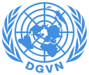

Ahmet Bekişoğlu
Gründer der Initiative und seit 06/2025 Arzt. Daneben schreibt er zu Health & Conflict und ist Mitglied im Global Health Hub Germany.
LinkedInArchiv · 2024–2026
Bewaffnete Konflikte, Flucht und Vertreibung können signifikante Folgen für die Psyche von Menschen haben. Unsere Initiative möchte Licht ins Dunkle bringen und über die Verzahnung von Gewalt und Auswirkungen auf den seelischen Frieden aufklären. Wir gehen auf die politischen Hintergründe von Konflikten ein und machen auf das kollektive und individuelle Leid von Betroffenen aufmerksam.
Die Initiative hat ihre Arbeit zum 30.09.2026 eingestellt. Diese Seite ist ein Archiv – zum Abschiedswort.


2024
Jury- und Publikumspreis

2025
der DGVN e. V. in Göttingen
Als ehrenamtliche Initiative war uns Aufklärung und Informationsarbeit besonders wichtig – mit dem Anspruch, wissenschaftlich und faktenbasiert zu arbeiten.
Psychische Erkrankungen und politische Ereignisse sind komplex und oft schwer zu verstehen. Deswegen erläutern wir in unseren Vorträgen die politischen Dimensionen von Kriegen und Konflikten und gehen dann auf die psychischen Auswirkungen auf Betroffene ein.
Mit unseren Beiträgen auf Instagram machen wir sowohl auf die individuellen Geschichten von Betroffenen politischer Auseinandersetzungen als auch auf psychische Erkrankungen aufmerksam und klären über Lösungen und Hindernisse auf.
Gespräche eröffnen neue Perspektiven. Im Austausch mit Aktivist:innen, Ehrenamtlichen und Wissenschaftler:innen möchten wir unserem Anliegen Gehör verschaffen und ihm die notwendige Bekanntheit im täglichen Diskurs bringen.
Eine Auswahl unserer Beiträge. Ein Klick öffnet den jeweiligen Beitrag auf instagram.com.


Gründer der Initiative und seit 06/2025 Arzt. Daneben schreibt er zu Health & Conflict und ist Mitglied im Global Health Hub Germany.
LinkedIn
Mitbegründerin der Initiative; studiert Jura an der Humboldt-Universität zu Berlin. Sie ist Mitglied der DGAP und arbeitet als Werkstudentin bei einer internationalen Kanzlei.
LinkedInZum 30.09.2026 haben wir als Initiative: Krieg Trauma Psyche unsere ehrenamtliche Arbeit eingestellt. Das während unserer Studienzeit entstandene Projekt traf auf viel Interesse und hat uns gezeigt, wie wichtig der Diskurs über dieses Thema ist. Aufgrund beruflicher Veränderungen und weiterer ehrenamtlicher Tätigkeiten können wir die nötigen Ressourcen jedoch leider nicht mehr aufbringen. Wir danken allen Wegbegleitern und Unterstützern von Herzen für das entgegengebrachte Vertrauen.